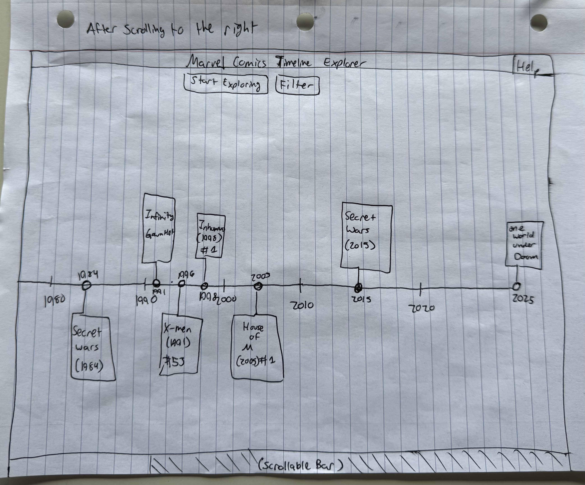
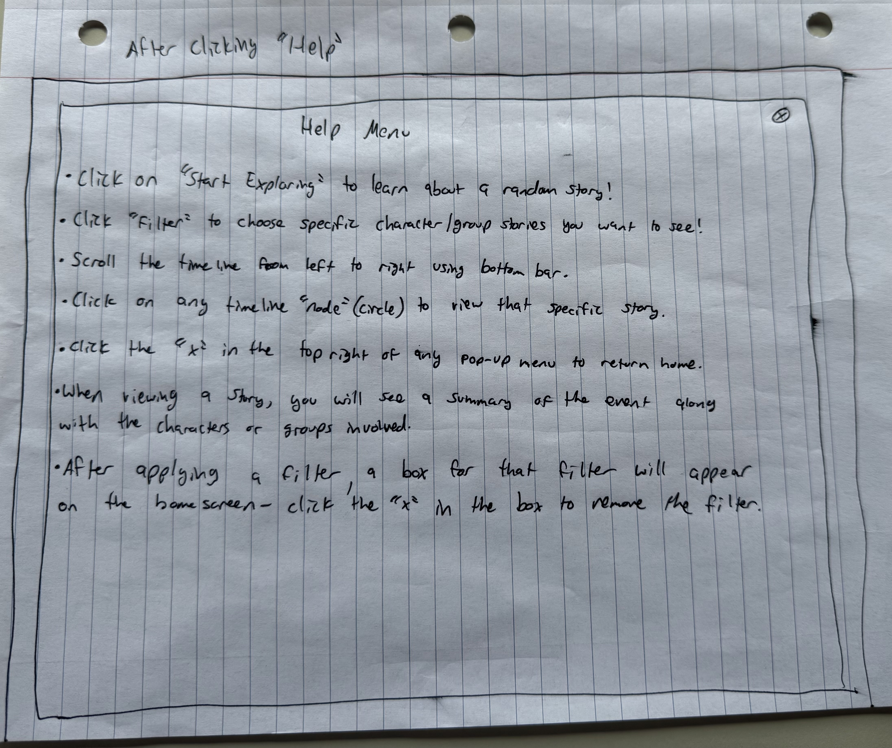
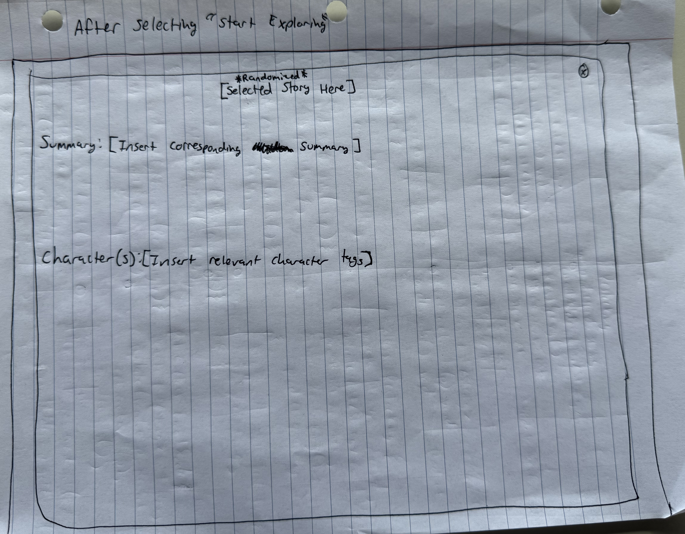
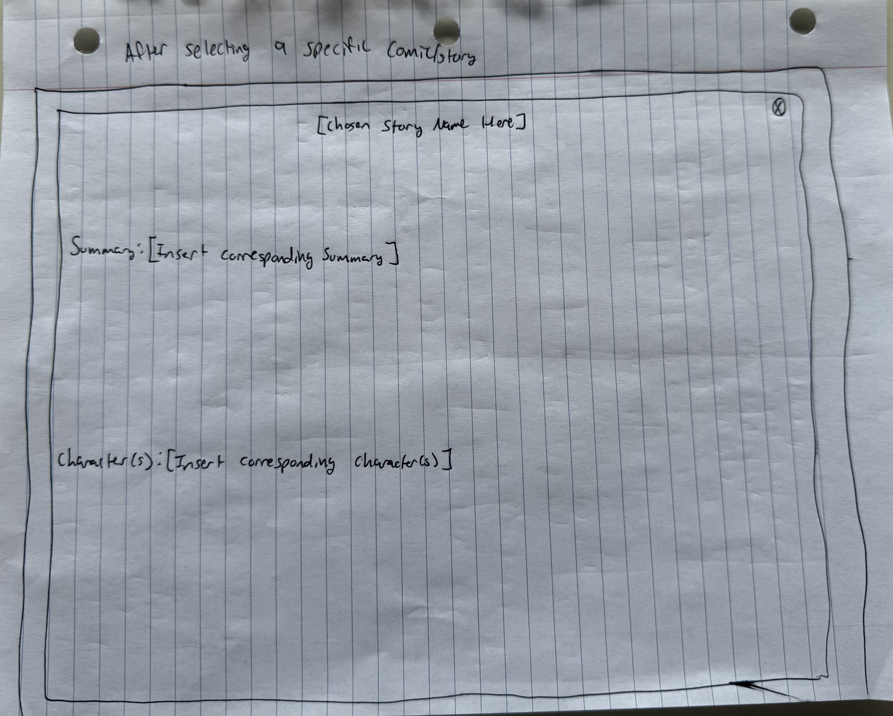
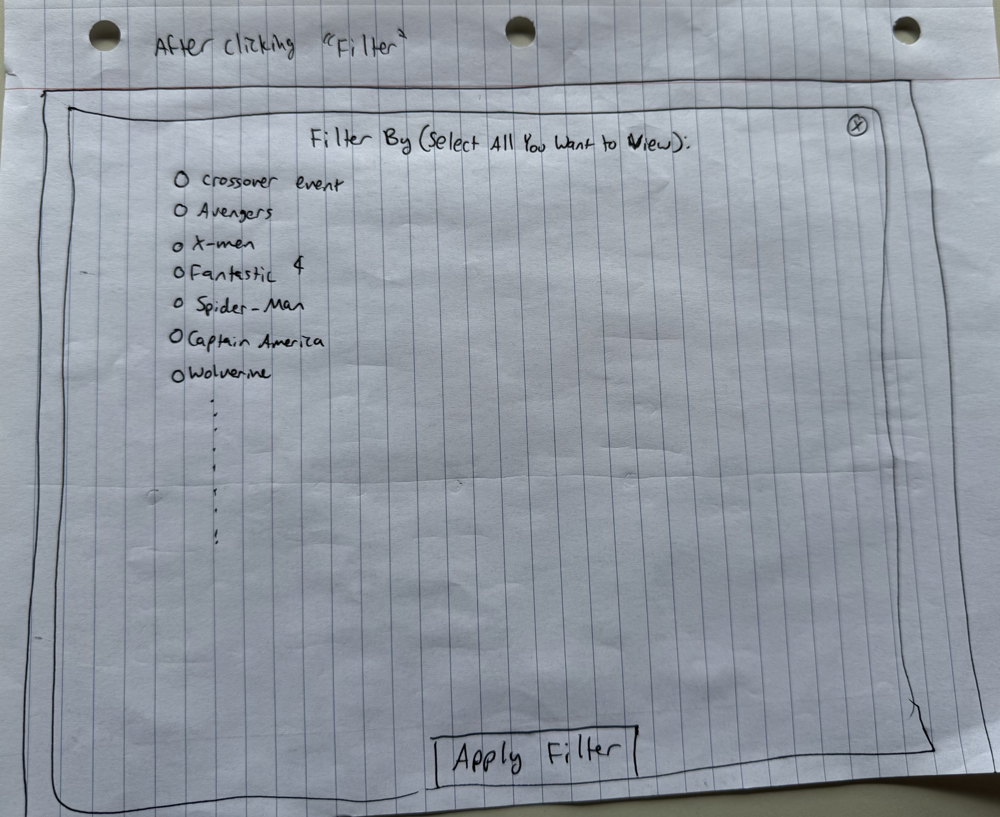
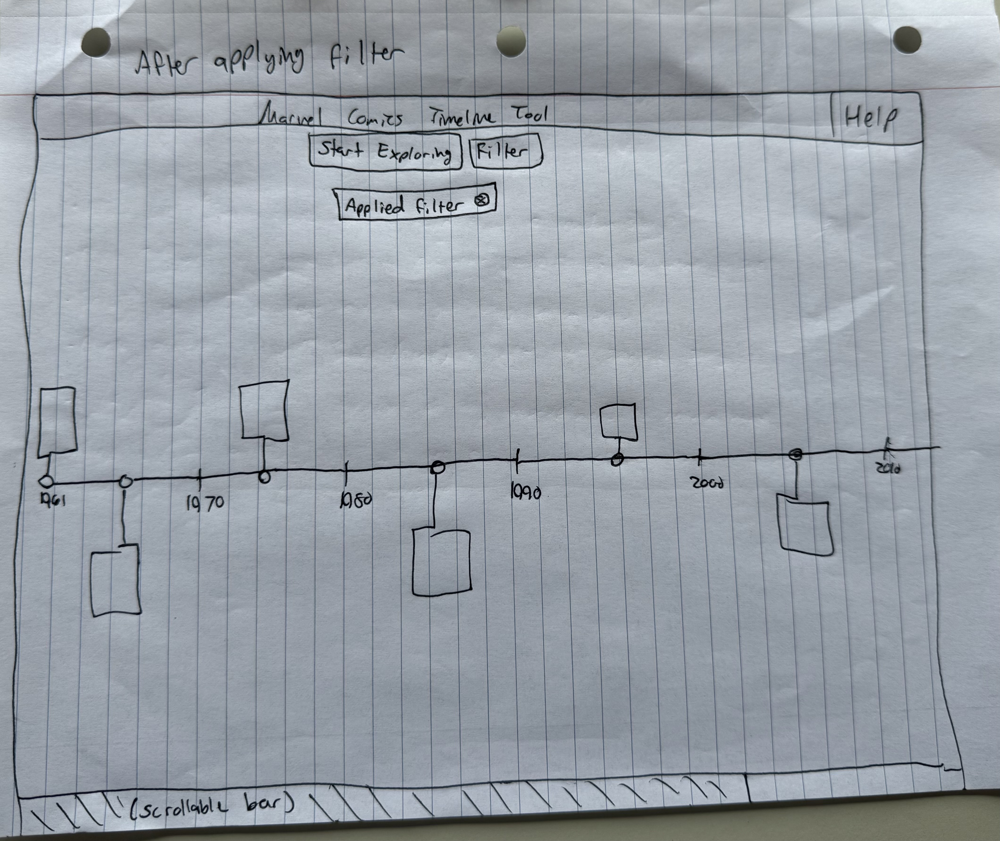

The home page ("landing" page).

The home page when scrolling the timeline to the right.
The help pop-up, after clicking on the "help" button.
A random story/comic given to the user after clicking "start exploring".
The specific selected story when clicking on the corresponding timeline node.
The filer pop-up, after clicking on the "filter" button.
The home screen after applying a selected filter.
"This is the Marvel Comics Timeline Explorer, where you can learn more about different Marvel Comics storylines and characters. You can
choose to click on "Start Exploring" to receive a random comic's information, you can select "Filter" to filter to specific characters
or groups you may want to read about, and you can select "Help" if you have any questions about how the website operates. You can view the
entire timeline by scrolling from left to right with the bar at the bottom of the page."